Archives : 2010-06
苦夏 @ Jun 30, 2010
箱子拍摄的“苦夏”中的一张照片，好传神的苦夏啊，收藏之。今天还蛮适合带上相机走出去拍拍照的。每年的夏天都是独一无二的，今年夏天认识了箱子，一想到她，就想起前天晚上我们两人坐在客厅里夜聊的情景，她的眼皮困得耷拉下来，看来我们是靠精神支撑着夜聊啊。无论如何，不要让我们的相机错过今年的夏天。
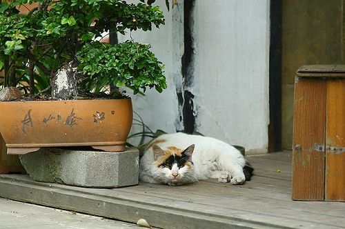
飞越疯人院 @ Jun 30, 2010

get up off your knees
By: Jochen van Eden
6月的南京不知是否还有梅雨季节？这些天闷热，气压低。傍晚，坐在客厅的藤椅上，或看电视或看杂志，不开空调，点上一支蚊香，与身后阳台上的花草做伴，摇把折扇，泡壶热茶喝。皮肤溢出细密的汗珠，“桑拿”后顿觉舒爽。这仿佛就是我喜爱的2010年夏季的摸样。
早晨上班的电梯间，听身后几个后勤部门的同事聊电视台天气预报。“天气预报出丑了，今年没有梅雨季节。”另一人接着说：“电视台也聪明啊，人家说要调整梅雨天气的标准。。。”听得我这个板着面孔准备冲进办公室，进行冷漠又疯狂工作的人...心里融化开来。这些很生活的对话，意味着一种平衡。后勤工作相对清闲，既然拿不到什么钱，却也获得了一份清闲，可以过上细腻的生活。而我们这个部门，任何TIME制度下，都要迟半小时下班，加班时间从下班后一小时二十分之后开始计算。。。工作中就是更换演唱重金属摇滚与民谣，有时还必须来段RAP。这是一群机器人在进行机械化运动，这是多么喜悦的工作场景？这些，让我们生活在“走马观花”中，不知不觉。
这种感受可以用一部电影名称总结“飞越疯人院”《One Flew Over the Cuckoo's Nest》，电影里“麦克.墨菲”装作精神异常，被送进了精神病院，他的到来挑战了医院严格的管理制度。。。”而我们深知“人类对于另类从来就是置之死地而后快”，于是在我们的社会中极力装作身心平衡的正常人，说别人所说，笑他人所笑。所以说，《One Flew Over the Cuckoo's Nest》完全具备社会学的研究价值。有人认为：“相比自由，人们更想要的是安全，而最安全的立场，就是‘跟大多数人站在一起’。”自由何以成为悲剧？
有位女友，09经济危机期间，英国总部倒闭，中国公司二把手的她赋闲在家到现在，她说：“现在可好，花得少了，也不必去挣更多的钱，舒服。”
夏日de扇 @ Jun 29, 2010
夏季随身携带一把绢麻小扇，温度也立刻优雅起来。
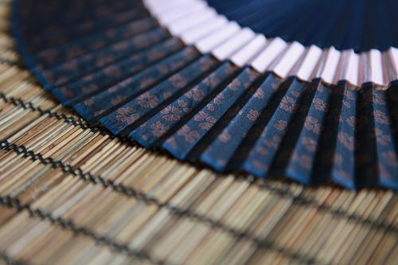

质感 @ Jun 26, 2010
问问和皮蛋妈找人订做的真皮皮包，这款被问问称为“信封包”，爱它呈现出的肌理感，没有合成加工的真牛皮，手感超出我的想象。符合我对皮具既热爱又挑剔的自我标准。以及，它侧面的窄度恰到好处，一看就区别出是女孩子用的，多了些纤细。单个金属搭扣，摈弃市场千篇一律的书包款。细想想，为一个所谓一流二流LOGO支付更多的money在品牌附加值上，不如将“实实在在”把握在手，东西还是自己用，LOGO是给别人看的。
质感，永远是我的心头爱。

JM中小原子的动手能力最强，不过这位先生的动手能力也是了得。人家想定做一只手工皮包，进去问过价钱，很贵。人家就在街上买了一块做腰带用的厚皮子，经过一段时间的设计，自己开始动手制作。这包真的很MAN，实沉。可以将一个男人的所有工具都装进去了。

DRESS BLOG @ Jun 25, 2010
冬天烫的头发，一直盘着。
头发长得真快，1/3被黑发占据。

慢悠悠地夏季。 @ Jun 24, 2010
小原子给我做的口金包，装硬币零钱很方便，与上班包的颜色很搭。

箱子今天问“谁家还用这个？”
我家还用。
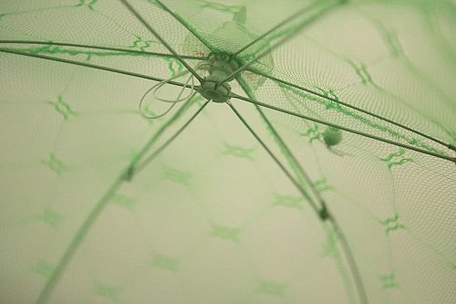
性感的小土豆，从肉体到情感都很性感。

晚饭后我最喜欢做的事儿：点蚊香。
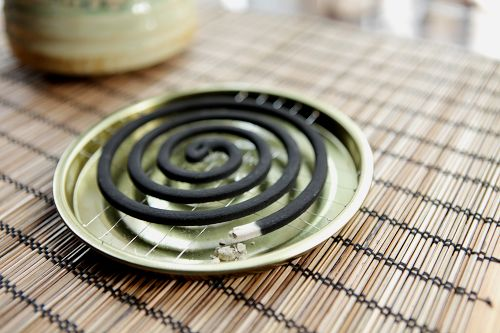
进入夏季，叶片疯狂生长的滴水观音，午后的叶片下也有凉意。

鹌鹑引发的杯具。 @ Jun 21, 2010
父亲养了两只鸡，灰碴碴的，初见纳闷，问为何养鸡。
母亲答：“人家说是鹌鹑，你爸打算买回来养。”
结果越养越是鸡的摸样。
又问：“为何烧了吃？”
答：“半夜鸡叫，扰民。”
晚饭吃着父亲烧的鸡，吃出滑稽味儿。
无独有偶，足球引发的杯具：（据美联社报道）朝鲜中央广播电视委员会第一书记因直播朝葡大战，以7：0大比分失利，严重损伤主体思想的国际形象，被迫于10分钟前辞职。太有责任感，也不好。为朝鲜队员们祈祷。
又是“末日”。 @ Jun 19, 2010
看了一部超级郁闷的电影： 《THE ROAD》，久久排遣不了心中怨气，悻悻然地去看这部电影影评，大多评价不错，我想谈谈自己的观后感，作为保留意见。
在《2012》，《The Book of Eli》之后《THE ROAD》又是一部讲述世界末日的电影，没什么特别的故事情节，整部电影都在讲述情感、心理以及生命承载的磨难，世界末日下展示出的不同人性。让我怨恨的是父亲对儿子的溺爱。。。极其艰苦又毫无希望的环境下求生，溺爱等于害了孩子。看电影我有很强的代入感，每每看到父亲对孩子无微不至的照顾，以及孩子纯洁心灵下仍然保持着人性的善良，我总会着急的说上两句。恶劣环境下只有强者才能生存。
电影就是电影，不现实的是一家四口以及一条狗在电影快结束时出现了，父子两已经挣扎在死亡线上，那么4个人1条狗，如何度过漫长的饥饿、人食人的危险、恶劣的自然环境以及疾病的困境？看到4个人1条狗的出现，我一点没感受到希望，而是觉得滑稽，这就是电影，观众真能在情感上得到慰籍吗？
如果在电影那样的情况下，我会选择生？还是会选择死？
答案是：选择死。
近期观影单：
**《THE PRISONER》（囚徒末路）--精神病医生也未必能绕出那些情节来；
**《SHUTTER IS LAND》（禁闭岛）--Teddy说：“你想象野兽一样活着？还是希望做个好人死去？”我认为这才是这部电影想要表达的真谛。
**《INVICTUS》（不败雄心）--适合在世界杯期间观看，讲述1995年南非英式橄榄球队的故事；
**《LOVE ME STILL》（依然爱我）--黑暗的表面下是一颗颗真实的心灵；
**《THE MESSENGER》（亡情使者）--需要耐心去体会的悲痛；
**《EXTRAORDINARY MEASURES》（特别措施）--同样讲述人性、求生与爱，但看得人神清气爽。
**《SOLOMON KANE》（所罗门·凯恩 2010）--符合我喜欢电影的类型，魔幻、真人、战争、正义战胜邪恶、斗士。
**《Valentine's Day》（情人节）-- 爱情轻喜剧，作为女友或妻子的女性可以认真观看一遍。

**《Leap Year》（闰年）-- 闰年四年才一次，而真爱一生只有一次。安娜和很多女孩一样，想要早日迈入婚姻的殿堂......好爱这部电影里的歌曲:You Got Me、Dream a Little Dream of Me，女主角都市女性的优雅气质摇曳在她时刻都穿着的高跟鞋上，很有风韵。
美丽心情 @ Jun 18, 2010
择日不如撞日，非计划内聚餐，去“美丽心情”吃了顿西餐。
菜点可口，凭这一点可以忽略店家服务态度与环境吧？


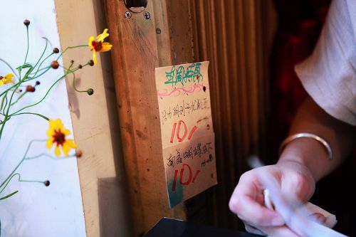

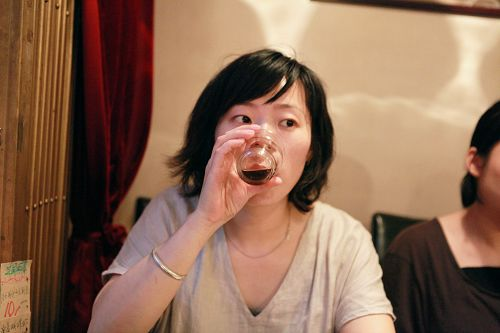
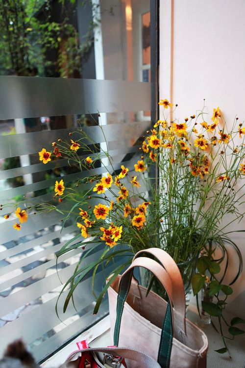
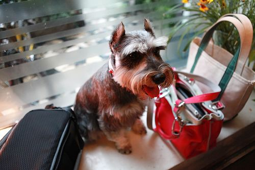
．宅． @ Jun 18, 2010
作为一个伪球迷，还是观看了几场感兴趣球队的比赛直播，坐在冬天的棉毯上观看，耿耿于怀，主卧的空调因为通讯故障等人来修，前几天还可以不开空调，但是昨晚已经无法在没有空调的情况下睡觉了，遂搬到客厅过夜。大金来人维修，因为一颗铜螺丝上的过紧，开裂导致新冷酶泄露。。。安装责任还是配件质量问题？太难鉴定。白天在家做家务尽量不开空调，稍微动一动就出汗，吃顿饭一身汗，喝壶茶一身汗，晾晒衣服也会汗如雨下，我是爱出汗的主儿，天气也到了难熬的夏季。出完汗，身体顿觉舒畅。
今天将棉毯从沙发上抽下放进洗衣机里清洗，给裸露的沙发上了一层皮革保护剂，用干抹布细细地揉开乳液，揉进皮革的毛孔中去，象保护自己的皮肤一般。假期除了电视机，最累的就是洗衣机了。
几天下来，感受作为一名职业主妇，并非轻易之事，在家的时间会比在办公桌前还要忙碌。这忙碌让人心甘情愿。如果可以这样度过夏天，也是美事一桩。
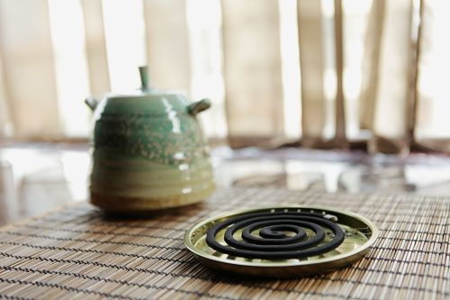

配合一下，今天。 @ Jun 11, 2010

幸福在生活的细微之处？ @ Jun 10, 2010
晚上看完电影《Extraordinary Measures 》，还没到11点，接着看会儿杂志，不经意间看到这篇《幸福在生活的细微之处》，里面介绍了上海的“苔青”，勾起兴趣，想到2009年在上海拍过它的照片，当时并不知道这是什么地方，里面用来做什么的。门紧闭，白天的走廊里亮着好氛围的灯光，有点儿说不出来的意境。于是，我打开电脑，准备记录看到的这篇文字，仅针对现在的自己，我给这个标题加了一个问号。
“苔青工作室”的创办人叫陆宇星，70后女性。从日本读完建筑回到上海，回来后她发现自己就象进入一座新修的花园，各种植物还在经历一个物竞天择的阶段，没有形成相互依存的平衡系统，大家都在拼命争夺尚不可知的位置。每个人感受到的压力都非常大，难有幸福可言。
她开始明白一件事：只要尽到自己的责任，反而可以更从容地感受幸福，就在那生活的细微之处。于是学建筑的她并没有加入到构建城市的钢精水泥大军中。她有她自己想要构建的生活：它完整，有生命，会呼吸。这种生命力应该作为建筑的一部分，存在于我们的生活空间里。同时，她也要亲身去实现它。于是，便有了“苔青”。去年夏天，她租下一处院子，将地板重新铺上吸水好的青砖。野草可以顺着青砖的缝隙生长上来。院子尽头的那口井，井水用来浇花。院子里的金桂是桂花最好的品种，每到秋天，最好的事就是在树下赏桂喝茶。
透过“苔青”，她认识了一些朋友，也给他们的生活带去了一些绿意。她常去乡间，几乎每个月去一次云南，也常去离市区很远的花市。看到没种过的草便拿回来种。她活着，并不需要很多钱。
植物的生长也给她启发：你养它只不过是从大自然把它们借过来，环境适合，它便生存，不适合，它就离开。你给它什么，它接受什么，不给，它也不抱怨，自然离开。人的本性不可能象植物这样。因为生存能力强，很多人便会夸大自己的主观愿望，当能力和主观愿望不一致的时候，就会有很多负面情绪来破坏内心的平衡。
城市并非没有幸福生活的可能性，只是个高难度的工作。很多人把问题想复杂了，一个人想要什么呢，年轻时候无非希望美貌，这是天生的，然后希望有好的伴侣，这部分取决于运气，后来希望家庭美满人际和睦，这也是可以努力的。对她来说，也是这样。她天亮睡下，正午起床，晚间工作，遵循着自己的生长规律，并不觉得有任何不健康。她在过的就是她想要的生活。
读完她的想法，对于处于两点一线的我仍然需要一个“问号”去思考，是否幸福已不重要，重要的是何为幸福？如何幸福？人生的幸福不是由优良基因、金钱和运气决定的。朋友纳闷现在的我为何越来越宅，完全与过去背道而驰，活了三十几年，现在才体会到一些幸福感。赞同shuwua说的：“跟从自己的心就好，以我的标准，幸福在职场没有，在胡同里有。”那么，我们为何还要斤斤计较“越追求越抑郁的伪幸福”呢？简单，但不要失去感受快乐的能力，就这样。
拍摄于2009年@上海

被美食安慰的人生。 @ Jun 09, 2010
一个人喜欢吃的理由可以如太阳为什么照耀地球一样，写成十万八千里的长卷论著，也说不清楚。活着喘气容易，用心活着却不是一件容易的事，用嘴吃饭人人都无师自通，用心吃饭则有一定的难度，即使名师指点也未必有几个能学得会。--ZJT
生活安逸，心思渐渐放在做饭这件在以前看来婆婆妈妈的事情上。我爸爸是无锡人，擅长红烧菜肴，烹饪技术在我家是NO.1。可是我妈妈却在吃上极不讲究，只要煮熟即可，并常常表达对讲究吃穿的蔑视。在这种天壤之别的搭配下生活若干年的我，想来继承了我爸爸的爱好。讲究吃和穿，有那么可耻吗？人生最重要的莫过于吃饱穿暖，当然我们已经越过这道基础线，走向被美食安慰的境界。每每自己动手做几个家常便饭，吃下它们，如果不可口顿时感觉这一天空荡荡的。反之，则感受到“生活幸福。”
我的豪华晚宴：
上左--鲜香菇炒青菜 上右--蒜苗炒肉丝（第二次烹饪记录）
下左--毛豆榨菜炒肉丝（南京本地家常菜） 下右--清蒸舻鱼

DRESS BLOG @ Jun 09, 2010
Some people entered in my life like sunshine in a rainy day.Some gave me difficult day but anyway I try,every day,to wake me up saying to me that a new day is a gift.
The life is so stressing.
But,is it cool?


那些遗失的下午。 @ Jun 07, 2010
工作，让我们遗失多少个美妙的下午。
一如，那些遗失的生活。
友说：生活不仅仅是关于“在一起”，它也关于“被分离”。
借用信乐团的这首“离歌”，表达一下无奈之情，虽然它是一首情歌。
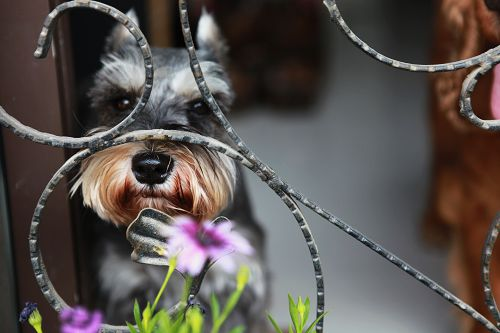

难忘*甜品 @ Jun 07, 2010
从瓷器店出来被女友领到一家”美丽心情“的甜品店。不确定是不是我吃过的最好吃的甜品，但它们的口味不比国外的甜品差多少，让人难忘。我想我还会去品尝N次。
坐下来吃进口，整个味觉融化开来。这么好吃的甜品，店名为何如此local？而不是起个国际化的店名？所谓“酒香不怕巷子深”，是这个道理吧。店面不大，甜品好卖，也有独自前来下午茶的。据说这家店开了有10年。。。恩，在这个城市居住二十几年，还是有许多我不知道的精彩。
西班牙丝绒巧克力；
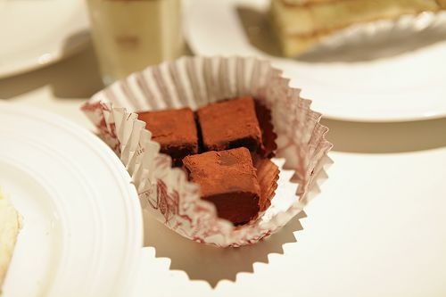
草莓布丁，这个味道一般；

芝士蛋糕，我的最爱。还有一款榴莲蛋糕，喜欢榴莲味儿的可以尝试；
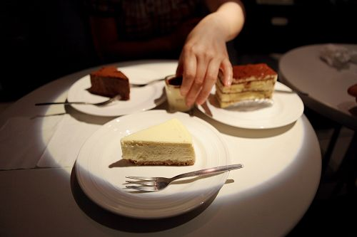
巧克力布朗尼；
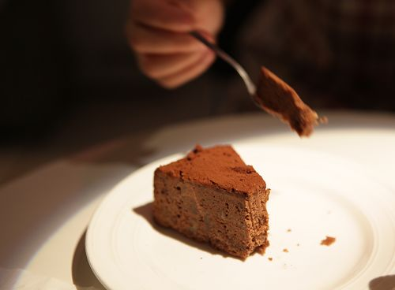
女友在拿铁咖啡上画花脸雪糕；

鲜草莓汁；

用．即．美 @ Jun 07, 2010
小说《平面图》作者埃德温.艾勃特是英国著名神学家和小说家，据说也是一位出色的数学家。小说中，他虚构了一个二维平面世界，并为次编制了一套完整的社会体系。这个世界里所有的物体包括生命体只有长和宽两个维度：房子是平的，实现是平的，一切都是平的。这里的居民只能看到物体的测边，感官思维里没有第三个维度的概念，因而他们无法想象世界还有高度。原因很简单，在平面国，物体如果离开平面，就等于在平面世界和他们的视线里消失，消失意味着不存在，也意味着无法感知，因为在这个二维世界里你永远也无法用事实来举证一个有“高”的三维空间。“向上，不是向北”这种话在平面国的居民听起来简直是扯淡，不仅没办法理解，他们还会将传播这类“异端学说”的人当祸害，直接抓起来关疯人院，或者拉出去处死，这样比较省心......
缺失的维度制约着人们的想象力，而制定社会规则的统制阶层则有意扼杀人们的想象力。如果你使劲儿看，再加上一点儿想象力，相信你会发现平面国的某些习俗与制度与我们目前生活的地方十分贴近，尽管小说影射的是100多年前的维多利亚时代。
--来自佳凝《想象力最奢侈》
没想到白天的江苏路车多，人多，好在有车厢将我们与外面的世界隔离开。我们下车走入这家新开的瓷器店，白色墙壁与那些从各处收集来的瓷器单品气质般配，店家从13岁开始对瓷器有兴趣，现在兼职开这家瓷器店，意不在生意，而在于结识志趣相投的人，形成一个氛围不错的圈子。
它们美且特别，期待后面陆续上的特别单品。

对这个收音机似的物件感兴趣，但它不是收音机，会是什么呢？

这么大号的茶杯适合放在办公室里使用。

问问新入50MM F1.8定焦头，不知道她的相机里可有心悦的片子？

逛店的还有无影狗土豆。--问问拍摄

一些陶瓷小摆设也有意思。
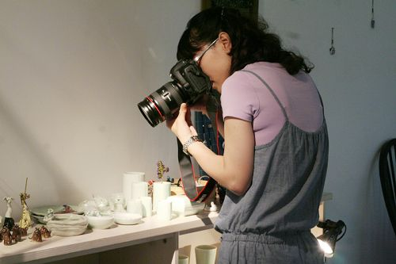
比如，问在瓷器店收了这枚陶瓷胸针，别在她的棉麻长裙上很和谐。

好东西总是店家自己用了。

没有门头，店名”和光“。玻璃门窗上倒映着民国建筑与小街，更爱它晚上的氛围，幽静，深邃，柔和。

初夏de花 @ Jun 04, 2010
三周前？捧它回家，与我们做伴，引发我们的求知欲，了解许多它的故事。为这丛初夏盛开的绣球花换了新盆与土壤，高温会使花朵褪色快，于是被安置在阴凉通风处，每日瞅它数眼，为枯叶焦虑，因观花喜悦。
这丛绣球花可绽放三种花色，红色、粉色和蓝色。因不同土质展现不同色彩。一早围脖上写反了土质与花色，且被数人转载，羞愧之余，反省“不人云亦云”是必定遵守之道。
为不误导，仍然需要重声：
红色：碱性土
粉色：施用石灰
蓝色：酸性土

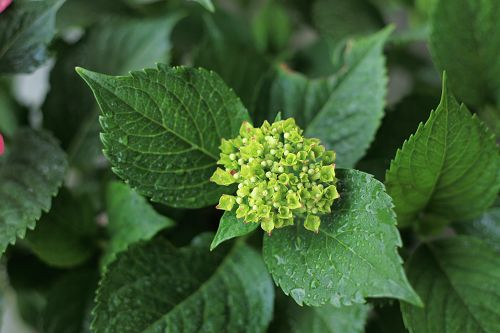

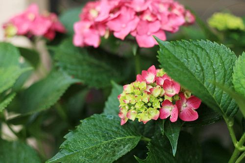
DRESS BLOG @ Jun 04, 2010
Confidence can add so much to your raiments.
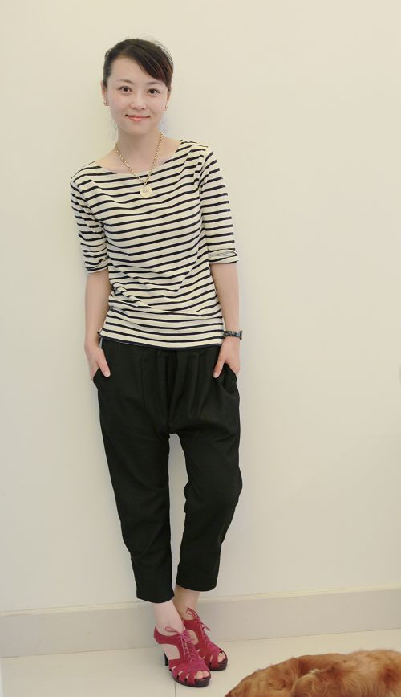

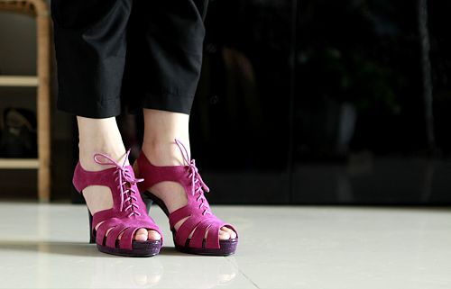
活色生香 @ Jun 03, 2010
每次下班到家，周围都蔓延着烹饪的香气。
自从非洲人和巴基斯坦人搬来做邻居，这种气味儿从未消散过，他们的伙食貌似比中国人的还好，他们的食量貌似比中国人的庞大？
有天早晨遇到那户巴基斯坦人，陆陆续续走出来约十来个，一座200平左右的房子里居然住着这么多人？他们着装朴素，浓浓的黑发黑眼，有的还穿着白色长袍。。。平时家中总会有人留守，窗帘也不会常常打开，甚至他们都没去过自己的院子，里面杂草丛生，好可惜啊，那么好的院子，种些花草该多好。十来个巴基斯坦人居住在一起，极其安静，这么有规矩的邻居，可我还是会联想到恐怖份子。
不知道非洲人常住的有几个？上周搬迁到此，搬家工人身上背着巨大的LV行李箱擦肩而过，刚搬来的周末便在家开起了大趴题，狗狗被黑暗中几个黑皮肤女人惊了一下，喧闹声到凌晨还没结束。每天早晨总能听到劲爆的音乐声传出，进出脚步铮铮有声，他们的阳台上挂着尼日利亚国旗。遇见散步回来的我们，上前逗luke玩，寥寥数语，知道他们兄弟二人，各在一所大学里学习国际贸易。哥哥带着中国女友来串门，听见那位女子说：你个色狼。非洲人民真奔放呐~
活色生香的生活，他们有，我也有。
想到电影里的一句台词：你怎么知道我没有珍藏的生活呢？
周末就快到了，不是吗？
收到好友送的儿童节礼物，左三层右三层包扎严实快递给我，印度木盒里装着Black Tea，香气闻起来令人心情愉悦，送礼送到心坎儿上了。

我家luke的小眼神，可以上漫画了。
请忽略土豆那丛乞丐胡儿，只要喝水吃饭，它就没有体面的胡子。它来我家之后，沙发就成了它的宝座，为了满足它，上面的垫子也不能撤了，它有锋利的小尖爪。
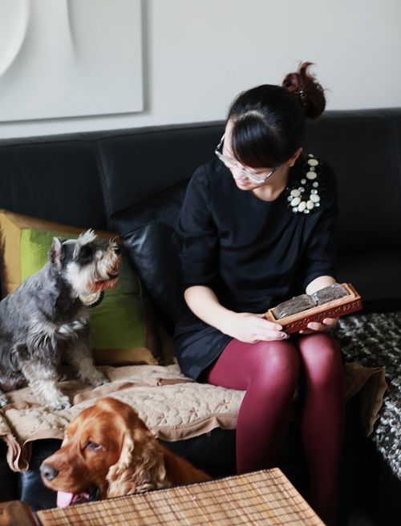
茶几上的那枚狗头。

机器人生活 @ Jun 02, 2010


明天星期四了？这周过得真快，一晃眼的功夫就是小周末。这和每天差不多的生活内容，紧张的节奏有关。加班时能感觉到颈椎顶着脑壳的不适，不知道哪根神经被压迫着，忙得差不多就下班，跑去商场帮好友买打腊牛皮凉鞋，米色只剩一双37码，好在我及时赶到。回家的路上顺道去修刘海，不打理的刘海，怎么看都象个汉奸。
漆黑的夜晚，驾车行驶在高架上，神情呆滞，甚至有些恍惚。大概饿着肚子会增加一丝凄苦感。想想这两点一线，偶尔改换一下线路的生活。。。想到每天早晨醒来急匆匆离家上班，在办公桌前坐下没完没了细碎又头绪繁多的工作，从上班到下班，然后为那一口饭再忙碌。就好象机器人的生活一般。醒来，开关被按下，行走的轨道、节奏以及内容已经被编程，这步走完接着就是下一步，容不得考虑，机器就这么运作的。
DRESS BLOG @ Jun 02, 2010
2007年黑色真丝针织衫+2008年无袖连衣裙+2009年鞋+2010年腰带+穿着椒盐色皮草的FANS
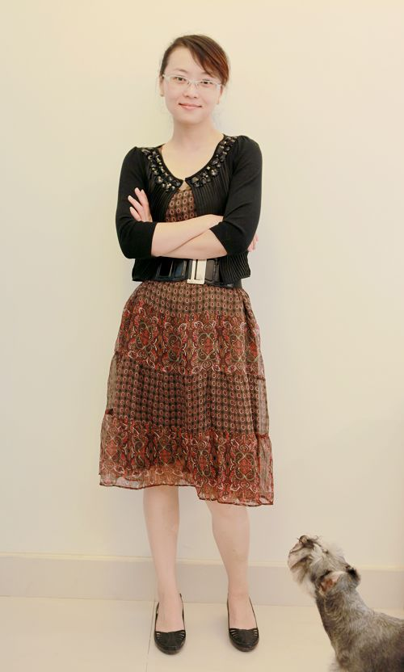


有关养狗的建议 @ Jun 02, 2010
TO：河川
luke是英国可卡，美卡比英卡体型略小，嘴也短一些，可卡赋有表情，对人友好，性格和人一样也会有不同；土豆是迷你雪纳瑞，精力旺盛，心思细腻，母狗更粘人。
无论选择哪一个犬种，之前最好做些了解，有些精力旺盛的狗狗，需要主人常常带出去运动，否则在家会有神经质、捣乱、乱啃东西的问题。如果主人不好动，那么适合养爱睡觉不爱运动的狗狗，比如法国斗牛犬。还有，每天是不是能保证带狗狗外出散步两次以上？
养犬之前做一些对各种狗狗的性格了解，以及日常开销的了解。有些狗狗是一定要定期美容的，比如泰迪、贵宾、雪纳瑞。。。以及食量，还有家中条件，有院子的话养大型犬当然没问题，如果是公寓，大型犬便不太适合。每个月你可以支付多少费用在饲养宠物上？这些费用和因素做到心中有数，对主人及狗狗都有好处。
我建议可以去宠物店或者收容所，领养狗狗，有许多被弃犬，领养后非常懂事，珍惜现在的生活。我家两条狗都是领养的，刚来会有些小问题，时间长了，习惯会根据主人的培训改过来，前提是主人得有耐心，因为它们一定会改掉坏习惯的。请不要歧视杂交犬，它们的身体往往更健康。而纯种犬，有些会有先天性基因缺陷的问题。
luke刚来我家有忧郁症，天天唉声叹气，紧锁眉头，头上有颗脂肪瘤；土豆刚来的那一个月我简直要崩溃了，它每天在家大小便，所有的窝都被尿湿过。我的确会下手打，但好象打的效果不明显。后来发现在它做错事的时候，在情感上冷落它，孤立它，它会有意识，坏习惯在1个月后有所好转，它来我家可能有4个月了，之前我上班会把它关在阳台上，为避免它随地大小便，现在已经让它们散放在家中，昨天土豆居然在狗厕所大小便，为它的改变我感到很高兴。
不要随意决定牵一条狗回家，做好思想准备，做好对你决定饲养的狗狗的了解，以及家庭情况的把握。那些把宠物当物品一样招之即来，挥之即去的行为，欠缺成熟度，以及对其他生命的忽视。宠物给我们的快乐，建立在我们给予它们良好的照顾上。
没有不好的狗狗，只有不懂狗的主人。
节日快乐。 @ Jun 01, 2010
“大力水手和忍者神龟喜欢吃什么？”
早晨上班路上，101.7的播音员在广播里询问到....
呃，totally不知道，速发短信给众友。
短信回复清晰地分两派：70年代中上旬不知道，70末80后回答正确。
有意思的是前者几乎都怀疑是不是脑筋急转弯？
俺们除了“生不逢时”，没认真看过这两部动画片之外，还被岁月磨练出多元思维。
好吧，今天不是愚人节，答案是“菠菜和意大利馅饼。”
皮蛋对外面这位大叔的观望很好奇，站起来用爪子拍拍大叔的脑袋，哼~
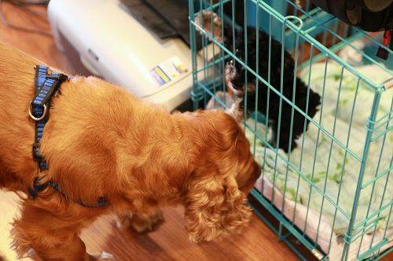
Maggie说：“你那双鞋打了5折。。。”（她总是告诉我不幸的消息）
我才买一个月，穿了三次！同时买的2双鞋还没穿。。。痛心！
于是我愤愤不平地又去了商场，买回这双7.5折凉鞋。并且对营业员说：“请转告厂家，为品牌形象考虑，不要短期内就折扣销售。。。”
当我乐滋滋捧着它的时候，传来一个声音：“再买一双，平均价便宜了，你就赚啦？”
恩，我承认我不会算帐，但很爱鞋。
这只狗爪儿的脚背也不错，呵呵~

我们今天都快乐！
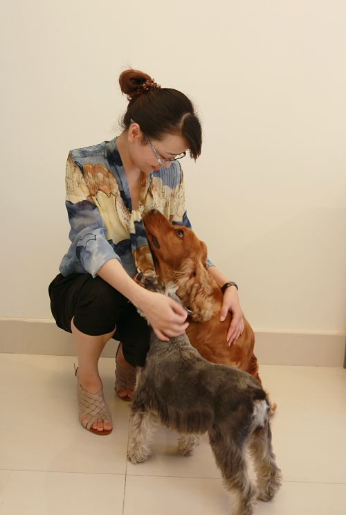